ข้อมูลแนะนำ Renka
ขอบคุณที่มาร่วมทดลองใช้นะคะ เอกสารนี้เป็นรายการฟีเจอร์ + จุดเด่นของแต่ละฟีเจอร์ไว้ใช้อ้างอิง ไม่มีโครงหรือลำดับที่ต้องทำตาม สร้างคอนเทนต์ในสไตล์ของคุณได้เลย
ตอนนี้แอปยังไม่มีภาษาไทย หน้าจอในแอปจึงเป็นภาษาอังกฤษ ในเอกสารนี้จะเขียนชื่อเมนูภาษาอังกฤษตามที่เห็นในแอปไว้ในเครื่องหมายคำพูด เพื่อให้หาเจอได้ง่าย
แนะนำสั้น ๆ ในประโยคเดียว
ใช้ตามนี้ได้เลย หรือจะปรับก็ได้
แอปนี้ต่างจากแอปอื่นตรงไหน
แอปอื่นส่วนใหญ่ส่งรูปถ่ายแบน ๆ หนึ่งรูปไปที่เซิร์ฟเวอร์ AI แล้วรับผลกลับมา ซึ่งเป็นการตัดสินแบบเดียวกับที่คนมองด้วยตาก็บอกได้
Renka ใช้การวัดใบหน้าแบบ 3D บนโทรศัพท์ (iPhone ใช้กล้องวัดความลึกของ Face ID) ไม่ได้ส่งรูปออกไป แต่วัดรูปทรงสามมิติของใบหน้าโดยตรง จึงให้ค่าที่รูปถ่ายให้ไม่ได้ เช่น พื้นที่ ความยาว และมุม และการวัดทั้งหมดเสร็จบนโทรศัพท์
ถ้าอยากเล่าว่า "แอปนี้ไม่เหมือนใครตรงไหน" จุดนี้แหละคือหัวใจ
ฟีเจอร์ใหม่ล่าสุด (อัปเดตพฤศจิกายน 2026)
ส่วนที่เพิ่มเข้ามาใหม่หรือเปลี่ยนมากที่สุดในอัปเดตนี้ ยินดีให้แนะนำก่อนเลย
"My Skin Routine" รูทีนดูแลผิวของฉัน (Pro · อัปเดต 17 พฤศจิกายน)
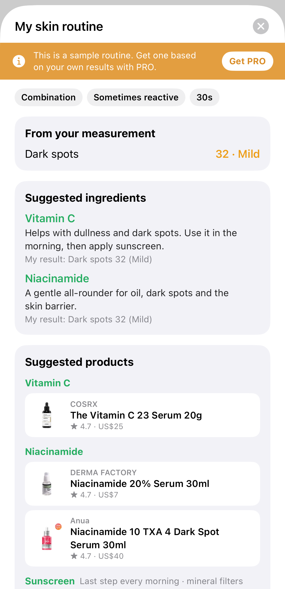
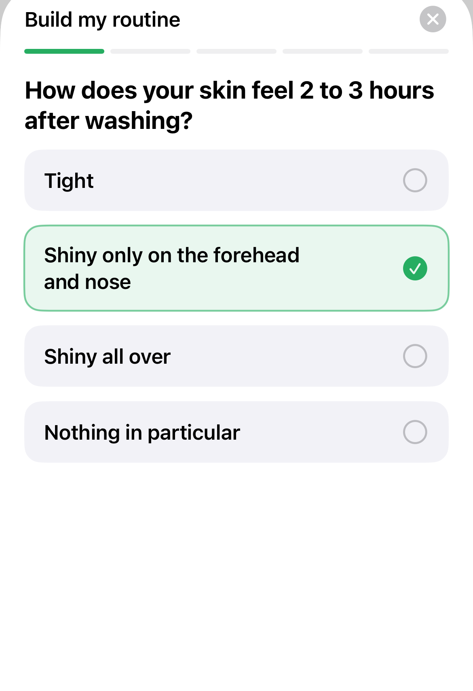
นำผลวัดผิวมารวมกับคำตอบ 5 ข้อ แล้วบอกส่วนผสมที่แนะนำและลำดับการดูแลผิวเช้าและเย็นที่เหมาะกับผิวของคุณ แต่ละส่วนผสมจะบอกเหตุผลที่เลือก วิธีใช้ (ใช้ตอนไหน บ่อยแค่ไหน) และข้อควรระวัง เข้าได้จากเมนู › "My Skin Routine" หรือปุ่ม "See my routine" ในการ์ดผิวของรายงานละเอียด และแอปจะเตือนให้วัดซ้ำหลังทำต่อเนื่องประมาณ 4 สัปดาห์เพื่อเปรียบเทียบ
ข้อควรระวัง: อย่ารับประกันผลของผลิตภัณฑ์ใด ๆ และอย่าพูดเหมือนเป็นการสั่งยาของแพทย์ผิวหนัง ขอให้แนะนำว่าเป็น"คำแนะนำการดูแลผิว"
วิเคราะห์ผิว · "My skin care priorities" ลำดับการดูแลผิวของฉัน
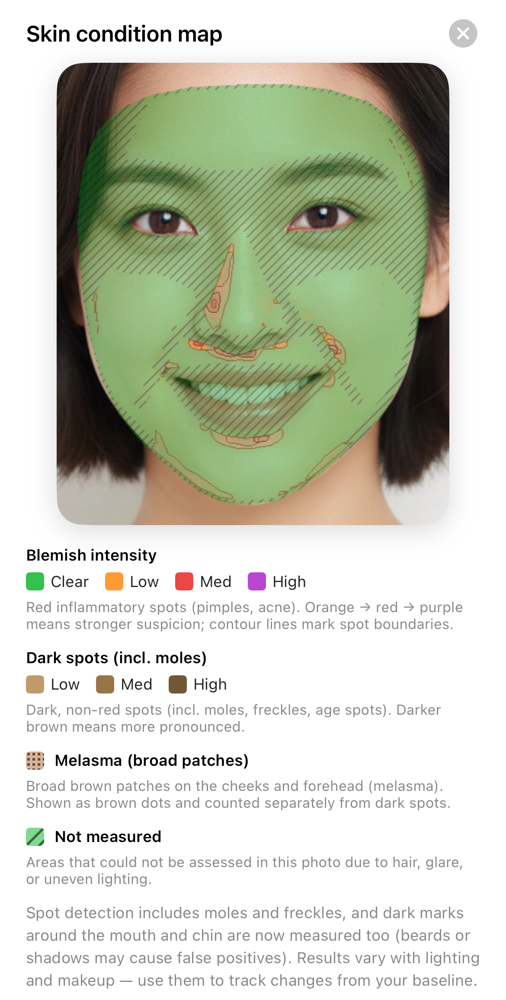
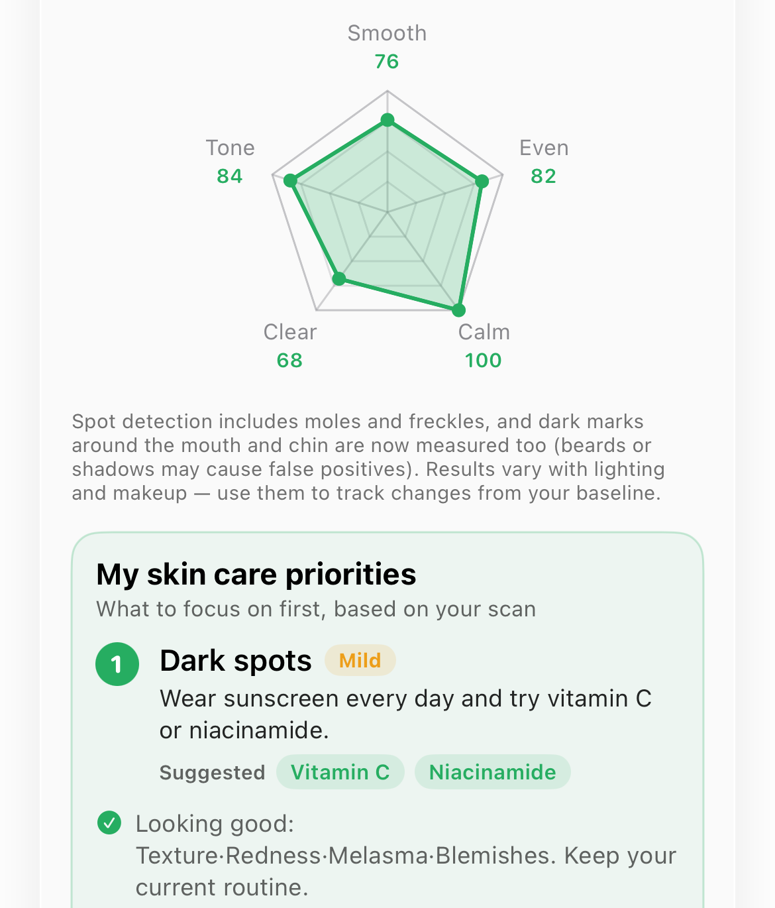
การวิเคราะห์ผิวในรายงานละเอียดครบขึ้นแล้ว นอกจากแผนที่สภาพผิวที่ซ้อนสีแสดงสิวอักเสบ จุดด่างดำ และรอยแดงบนใบหน้า ยังเพิ่มตัวชี้วัดฝ้าบริเวณกว้างบนแก้มและหน้าผากแยกต่างหาก และการ์ด "My skin care priorities" ที่บอกตามลำดับว่าควรดูแลอะไรก่อนจากผลการวัด
หลังอัปเดต 17 พฤศจิกายน การวิเคราะห์ผิวแยกเส้นผมกับผิวได้แม่นขึ้น และจับสิวกับไฝที่เคยหลุดไปได้แล้ว
ข้อควรระวัง: อย่าพูดว่าเป็นการวินิจฉัยของแพทย์ผิวหนัง ขอให้แนะนำว่าเป็น"ข้อมูลอ้างอิงในการดูแลผิว" และอย่าสัญญาผลของสกินแคร์หรือทรีตเมนต์ใด ๆ
วิเคราะห์ความอิ่มของใบหน้า · "Volume Balance" (เบต้า)
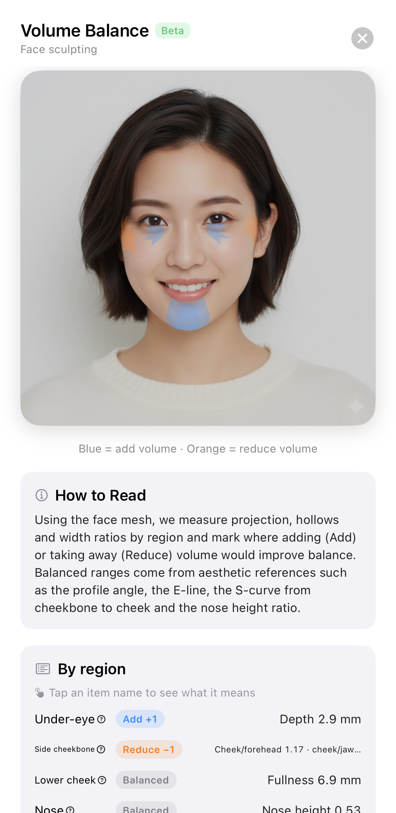
ใช้เมชใบหน้า 3D วัดส่วนที่นูนและส่วนที่ยุบเป็นมิลลิเมตร 10 ส่วน ได้แก่ หน้าผาก ขมับ ใต้ตา แก้มส่วนหน้า โหนกแก้มด้านนอก แก้มส่วนล่าง จมูก ริมฝีปาก คาง และกรอบหน้า แสดงเป็นแผนที่บนใบหน้าว่าตรงไหนเติมให้อิ่มขึ้น ตรงไหนเก็บลงแล้วจะสมดุลขึ้น พร้อมคำแนะนำการแต่งหน้าสำหรับแต่ละส่วน
"Makeup colors" ลองสีเมคอัพ (ฟรี)
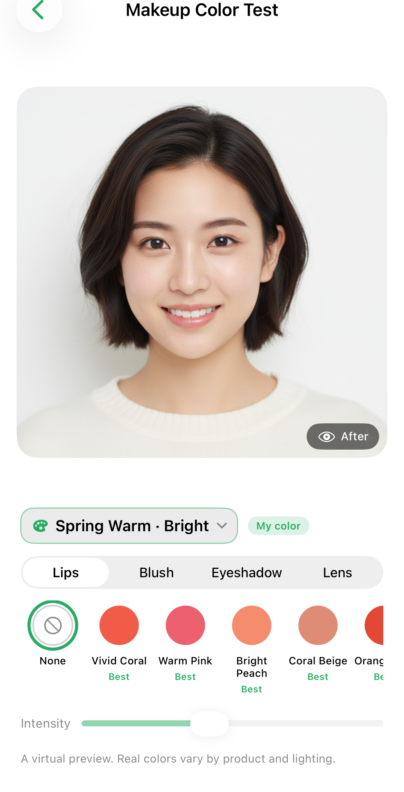
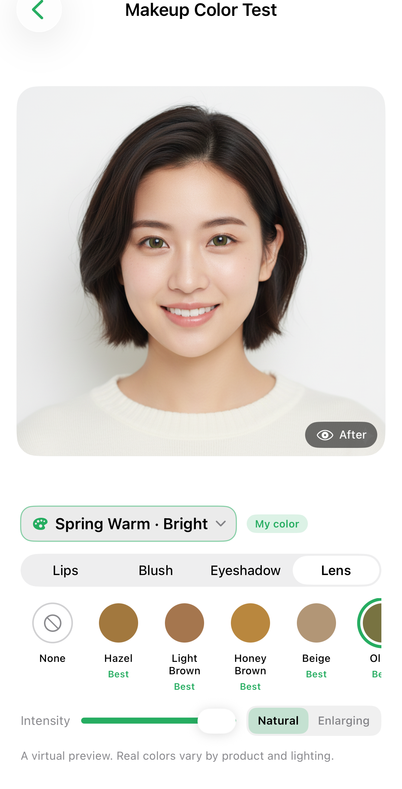
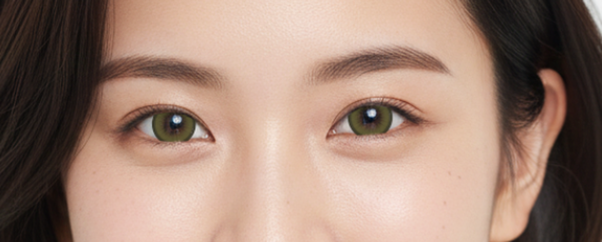
ลองสีลิป บลัชออน อายแชโดว์ และคอนแทคเลนส์สีที่เข้ากับโทนสีประจำตัวของคุณ ซ้อนลงบนรูปของตัวเองได้เลย ทุกสีปรับความเข้มได้ และเทียบกับหน้าเดิมได้ เข้าได้จากเมนู › "AI Style Fitting" › "Makeup colors" หรือจากผล Personal Color ในรายงานละเอียด ทุกคนใช้ได้ฟรี
Personal Color 8 ประเภท
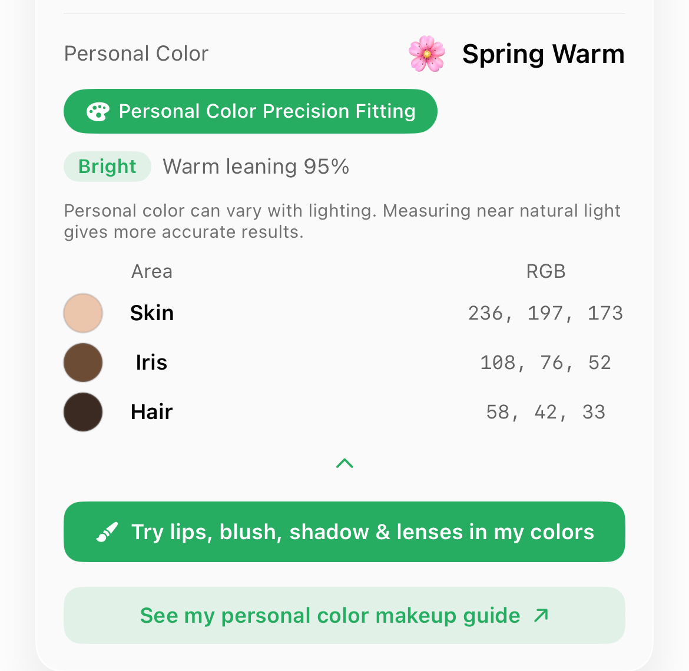
ผล Personal Color จะออกมาเป็น 8 ประเภท เช่น "Spring Warm · Bright" หรือ "Summer Mute" กดปุ่มใต้ผลเพื่อลองสีลิป บลัชออน อายแชโดว์ และคอนแทคเลนส์สีได้ทันที หรือกด "See my personal color makeup guide" เพื่อดูคู่มือสีที่เข้ากับประเภทนั้น
อื่น ๆ
- "Beauty Selfie": เลือกรูปจากอัลบั้มได้ทีละหลายรูป (สูงสุด 10 รูป) แล้วใส่ลุคเดียวกันในครั้งเดียว
- ความยาวใบหน้า · การแบ่งสามส่วน: ดูโดยใช้แนวไรผมหรือกลางศีรษะเป็นเกณฑ์ได้ด้วย
- รูปหน้า: วิเคราะห์ได้แม่นขึ้น
- "Beauty Selfie": เร็วขึ้น และจับขอบเขตผิวได้แม่นขึ้น
- "Measurement reminders": เปิดการแจ้งเตือนให้บอกเมื่อถึงเวลาวัดอีกครั้งได้
ฟีเจอร์ที่เพิ่มเมื่อเดือนที่แล้ว (อัปเดตตุลาคม 2026)
"AI Style Fitting" ลองทรงผม · แว่นตา
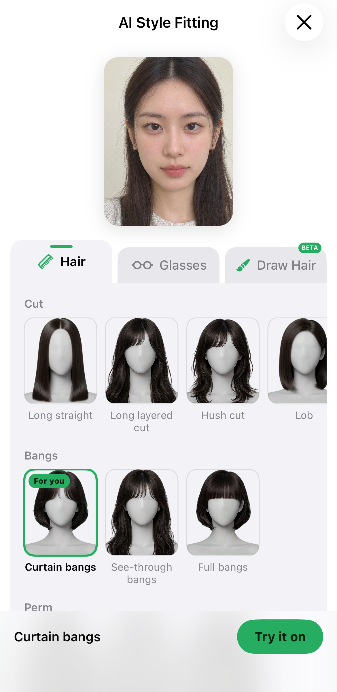
ใช้ AI ลองทรงผมใหม่และแว่นตาบนรูปของตัวเอง เลือกแล้วไม่กี่วินาทีก็ได้ภาพตัวอย่างที่สมจริง เข้าได้จากหน้าผลการวัดหรือจากเมนู การเลือกสไตล์ใช้ได้ทุกคน การรวมภาพต้องใช้ Pro
อื่น ๆ
- ค่าของตา · ร่องแก้ม · ใต้ตาคล้ำ: มุมหางตา ความสูงเปลือกตาบน (MRD1) การปิดของเปลือกตา ความลึกของร่องแก้ม และดัชนีใต้ตาคล้ำ แสดงเป็นตัวเลขในรายงานละเอียด
- "100-Day Challenge Report" รายงาน 100 วัน: รับรายงานทุก 100 วัน เทียบกับช่วงก่อน กราฟแนวโน้มทั้งช่วง และสรุปโดย AI ของ Rena ดูรายงานตัวอย่างก่อนได้
- "Beauty Selfie": บิวตี้แบบเรียลไทม์ (ผิว · ตา · จมูก) เป็นธรรมชาติขึ้น และตามใบหน้าได้นิ่งขึ้น
จุดเด่นของแต่ละฟีเจอร์
ลำดับไม่มีความหมาย เลือกดูเฉพาะที่สนใจได้เลย
ขนาดใบหน้า
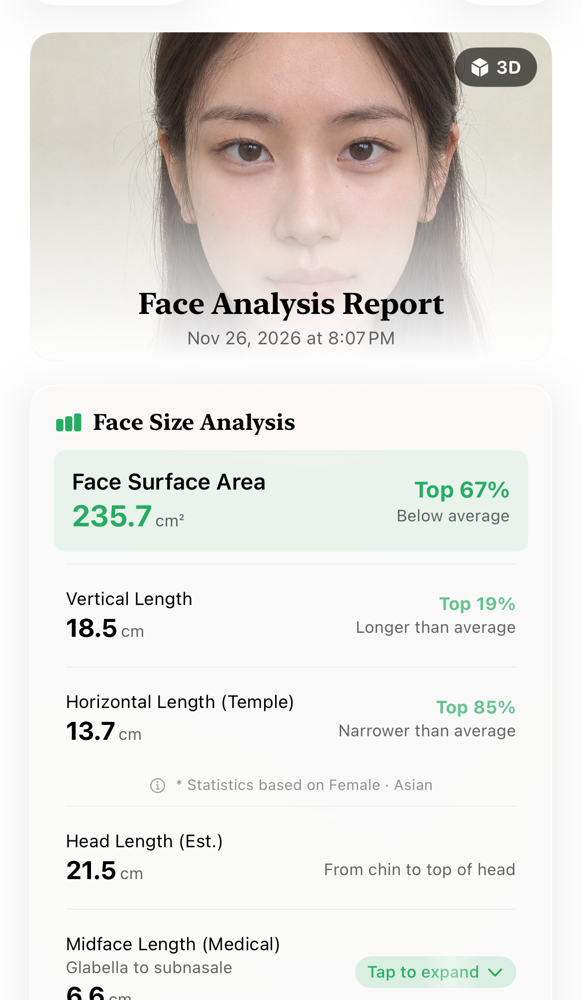
เวลาคนพูดว่า "หน้าเล็กหน้าใหญ่" มักวัดจากคางถึงกลางศีรษะ ซึ่งนับความหนาของผมเข้าไปด้วย Renka วัดถึงตำแหน่งที่ใบหน้าจบจริง ๆ ต่อให้เปลี่ยนทรงผม ค่าก็ไม่เปลี่ยน
ข้าง Head length จะมีคำว่า "Est." หมายถึงค่าประมาณ ไม่ใช่ค่าที่วัดจริง
ความยาวใบหน้าส่วนกลาง
ใบหน้าเดียวกันมีสองเกณฑ์: เกณฑ์ทางการแพทย์ (หว่างคิ้ว → ใต้จมูก) และเกณฑ์ความงาม (ใต้ตา → มุมปาก) ในแอปสลับดูได้ และซ้อนลงบนใบหน้าของตัวเองได้ทันที
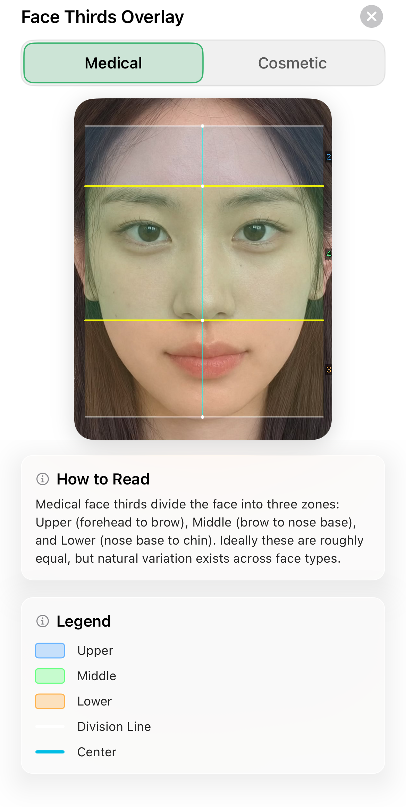
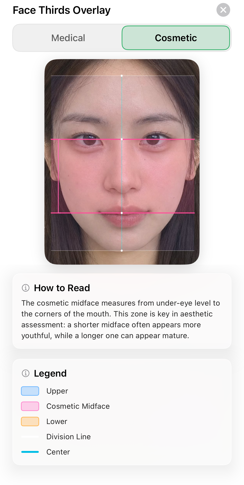
อาการบวม
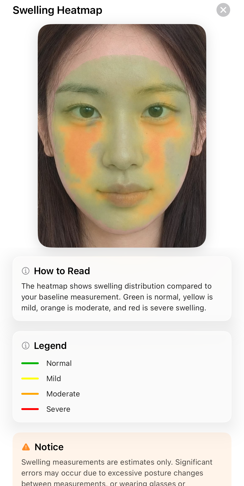
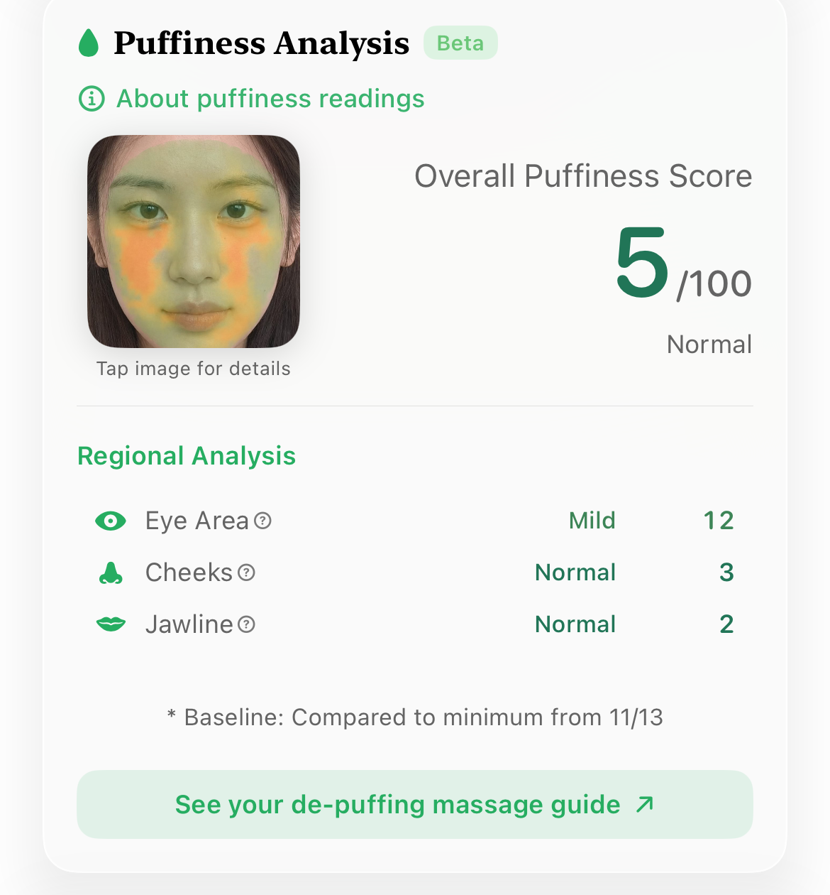
ถ้ารีบ: วัดติดกันหลายครั้งก่อนถ่ายก็ได้ ตั้งแต่ครั้งที่สองจะมีค่าให้เทียบ แต่ในวันเดียวกันค่าจะเปลี่ยนน้อย ผลจะไม่ชัดเท่าการสะสมหลายวัน
สัดส่วนทองคำ
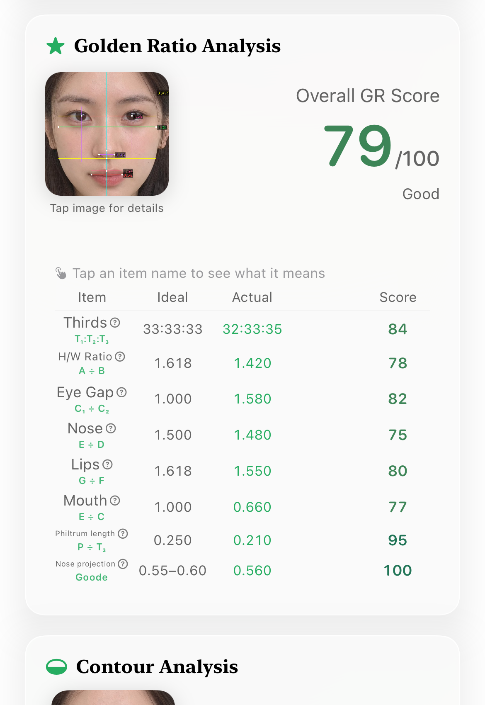
หน้าจอเดียวมีข้อมูลเยอะ เหมาะใช้เป็นภาพผลลัพธ์
ยังมีอีก
รูปหน้า
บอกรูปหน้า เช่น หน้ารูปไข่ หน้ากลม หน้าเหลี่ยม และเชื่อมไปยังคำแนะนำทรงผมและแว่นตาที่เข้ากับรูปหน้า
ไม่ค่อยแนะนำให้ทำเรื่องการลองเป็นหัวข้อเดี่ยว ใช้ร่วมกับหัวข้ออื่นแบบข้างบนจะดีกว่า
"Your GlowUp Tips" ทิปเพื่อลุคที่ดีขึ้น
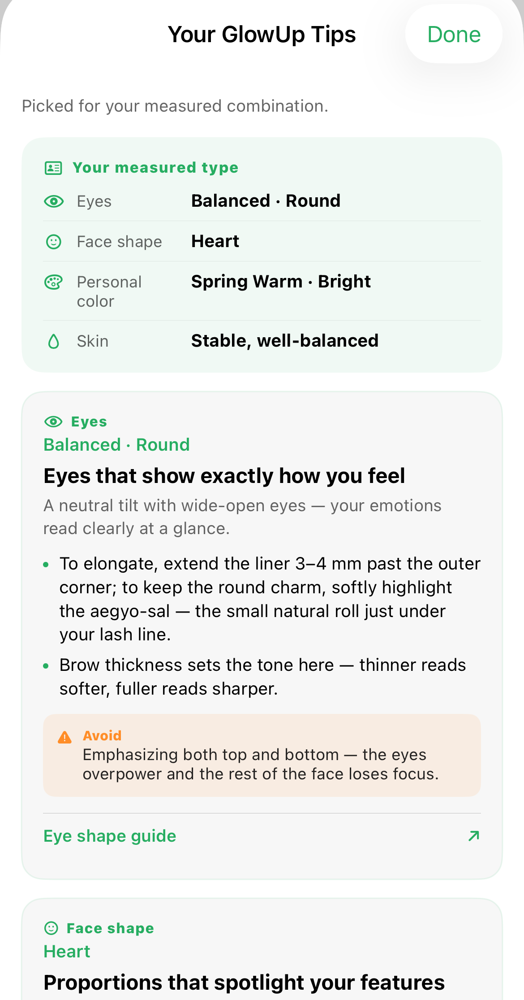
นำผลการวัดมารวมกันเพื่อเลือกคำแนะนำ เช่น "ทรงตาของคุณเป็นแบบนี้ จึงลากอายไลเนอร์เลยหางตาออกไป 3 ถึง 4 มม." โดยเขียนเหตุผลที่มาจากตัวเลขไว้ด้วย ทางเข้าอยู่ที่ปุ่มท้ายสุดของรายงานละเอียด
"Your better self" ตัวเราในเวอร์ชันที่ดีขึ้น (เบต้า)
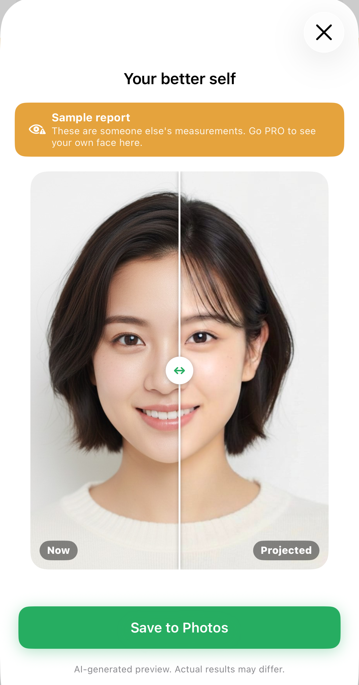
ให้ AI วาดภาพหลังจากทำตามคำแนะนำไว้ล่วงหน้า ลากที่จับตรงกลางไปซ้ายขวาเพื่อเทียบตอนนี้กับภาพที่คาดไว้ และบันทึกเป็นรูปได้ ทางเข้าอยู่ท้ายสุดของหน้าทิป
กล้องแคลอรี่
ถ่ายรูปอาหารแล้วดูแคลอรี่และข้อมูลโภชนาการได้ ใช้ได้โดยไม่ต้องจ่าย การจดจำอาหารทำบนโทรศัพท์
ปรึกษา AI กับ Rena
คุยกับ AI โดยใช้ผลการวัดของตัวเองได้
ผู้ชมอาจเห็นหน้าจอไม่เหมือนคุณ
โค้ดทดลองใช้จะเปิดฟีเจอร์ Pro ทั้งหมด ส่วนผู้ใช้ทั่วไปเป็นแบบนี้:
- การวัดและผลพื้นฐาน กล้องแคลอรี่ ลองสีเมคอัพ: ฟรี
- AI Style Fitting: เลือกสไตล์ฟรี รวมภาพต้องใช้ Pro
- รายงานละเอียด (ใบหน้าส่วนกลาง สัดส่วนทองคำ รายละเอียดอาการบวม Volume Balance แผนที่สภาพผิว · ลำดับการดูแลผิว GlowUp Tips Your better self รายงาน 100 วัน ฯลฯ ภาพหน้าจอข้างบนเกือบทั้งหมด): Pro
- My Skin Routine: Pro (รูทีนตัวอย่างทุกคนดูได้)
- Live Filter: มีจำนวนครั้งใช้ฟรีทุกวัน ถ้าต้องการมากกว่านั้นต้องใช้ Pro
ถ้ามีคนในคอมเมนต์ถามว่า "ทำไมฉันไม่เห็นหน้าจอนี้" ตอบว่า "รายงานละเอียดเป็นฟีเจอร์ Pro" ได้เลย และ "Sample report" ในแอป ทุกคนเปิดดูก่อนได้
การวัดเสร็จบนโทรศัพท์ ไม่ต้องอัปโหลดรูปขึ้นเซิร์ฟเวอร์
ใช้ได้ทั้ง iPhone และ Android iPhone ใช้กล้องวัดความลึกของ Face ID วัดแบบ 3D ส่วน Android ใช้เมชใบหน้า 3D จาก AI ของกล้อง
วิดีโอที่ได้รับการสนับสนุนต้องระบุว่าเป็นโฆษณา: ใช้ป้าย "Paid partnership" หรือ "เนื้อหาที่มีการสนับสนุน" ตามกฎของแพลตฟอร์ม หรือใส่ #ad / #โฆษณา / #ได้รับการสนับสนุน ในแคปชัน
เรื่องคะแนน: บางจุดในแอปแสดงเป็น XX/100 ถ้าอยากเล่ามุม "คะแนนไม่ได้สำคัญขนาดนั้น"
ทำได้เต็มที่ เพราะเราเองก็คิดแบบนั้น
ขอแค่ข้อเดียว: อย่าพูดเหมือนเป็นผลของหัตถการความงาม หรือภาพก่อนหลังทำศัลยกรรม เล่าแค่ว่า "ส่วนนี้เป็นแบบนี้ จึงดูเป็นแบบนั้น" ก็พอ ไม่ต้องบอกว่า "ต้องแก้อย่างไร"
แฮชแท็ก
จำเป็น: #Renka3D แท็กนี้ขอให้ใส่ทุกครั้ง
เราใช้แท็กนี้หาโพสต์และวิดีโอของคุณ และช่วยให้รีโพสต์หรือแชร์จากบัญชีทางการได้สะดวก
(ถ้าใช้แค่ #Renka จะจมไปกับคอนเทนต์อื่น จึงเติม 3D เข้าไป)
ถ้าเอเจนซี่หรือแพลตฟอร์มที่ร่วมงานกำหนดแฮชแท็กไว้ ขอให้ใช้ตามนั้นก่อน
ด้านล่างเป็นแท็กที่แนะนำรองลงมา ถ้าซ้ำกับที่กำหนดหรือใส่ไม่หมดก็ตัดได้ (แท็กยอดนิยมเปลี่ยนเร็ว ใช้เป็นแนวทางเท่านั้น)
ถึงจะมีแท็กที่กำหนดแล้ว ก็ขอให้ใส่ #Renka3D ด้วย
- ทั่วไป: #สวยขึ้น #แต่งหน้า #สกินแคร์ #ดูแลตัวเอง #บิวตี้
- ตามหัวข้อ: ขนาดใบหน้า → #หน้าเล็ก #รูปหน้า ／ ใบหน้าส่วนกลาง → #สัดส่วนใบหน้า ／ อาการบวม → #หน้าบวม #ลดบวม ／ สี → #personalcolor #โทนสีผิว ／ เมคอัพ → #สวอชลิป #ลุคแต่งหน้า ／ ผิว → #ผิวหน้า #รูทีนสกินแคร์ ／ ความอิ่มของใบหน้า → #คอนทัวร์ #เฉดดิ้ง ／ ทิป · ภาพที่คาดไว้ → #ทิปสวย ／ ทรงผม · แว่นตา → #ทรงผมเข้ากับหน้า #แว่นตา
- ขอไม่ให้ใส่แท็กเกี่ยวกับหัตถการความงามหรือศัลยกรรม ด้วยเหตุผลเดียวกับคำขอข้างบน
สื่อประกอบ
- ไฟล์ทั้งหมดรวมไว้ที่: renka-kit.zip (ภาพหน้าจอ 20 รูป + ไอคอน · โลโก้)
- ไอคอนแอปขอบมน: 1024 · 512 หน้าตาแบบเดียวกับไอคอนบนหน้าจอโฮม เหมาะใส่ในวิดีโอและภาพปก
- โลโก้: renka_logo.png
- ภาพหน้าจอต้นฉบับ: ขนาดใบหน้า · ใบหน้าส่วนกลาง · แบ่งสามส่วนแบบการแพทย์ · แบ่งสามส่วนแบบความงาม · แผนที่ความร้อนอาการบวม · อาการบวมแยกส่วน · Personal Color 8 ประเภท · สัดส่วนทองคำ · GlowUp Tips · Your better self · Volume Balance · AI Style Fitting · แผนที่สภาพผิว · ลำดับการดูแลผิว · ลองสีลิป · ลองสีอายแชโดว์ · My Skin Routine · คำถามรูทีน · ลองคอนแทคเลนส์สี · คอนแทคเลนส์สี ขยาย (ภาพในเนื้อหากดเปิดได้เป็นภาพต้นฉบับเช่นกัน กดค้างเพื่อบันทึก)
- ชื่อทางการ: App Store / Google Play "Renka - 3D Face Analyzer" · ค้นหา "Renka" ก็เจอ
- App Store: https://apps.apple.com/th/app/id6756908316
- Google Play: https://play.google.com/store/apps/details?id=com.fattail.renka
- เว็บไซต์ทางการ (ภาษาไทย): fattaillabs.com/RenkaAI/th/ มีคำอธิบายฟีเจอร์ ใช้อ้างอิงตอนเขียนแคปชันได้